INDEX
CAFE
DESSERT
BRAND
SHOP
MENU
BEST
EVENT
The Strawberry Season Begins!
STRAWBERRY DISSERT FESTIVAL
share sweetness with flavorshare sweetness
Dessert Type
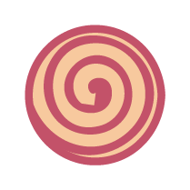
Biscuit
밀가루를 주원료로 하여 지방·우유·버터·달걀·당분·향료 등을 섞어서 반죽하여 여러 모양의 틀에 구워낸 마른과자.
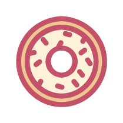
Donut
도넛은 밀가루에 설탕, 계란, 우유, 지방, 이스트를 넣어 만든 반죽을 둥글게 빚어 안쪽에 구멍을 뚫거나 링 모양으로 만들어 기름에 튀긴 빵이다.
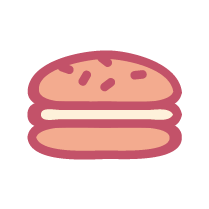
Macaron
마카롱은 작고 동그란 모양의 머랭 크러스트 사이에 잼, 가나슈, 버터크림 등의 필링을 채워 만든 프랑스 쿠키이다.
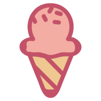
Ice cream
우유 또는 유지방 ·무지유고형분에 설탕 ·달걀 ·안정제(젤라틴 등) ·향료 ·색소 등을 넣고 휘저어서 얼린 빙과.
MENU
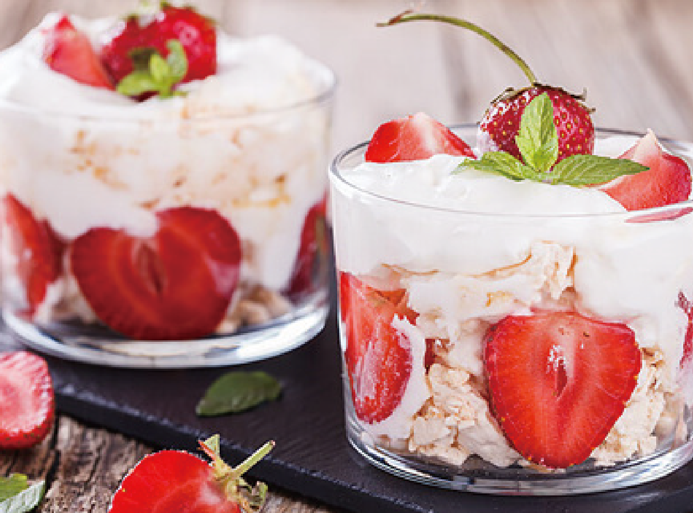
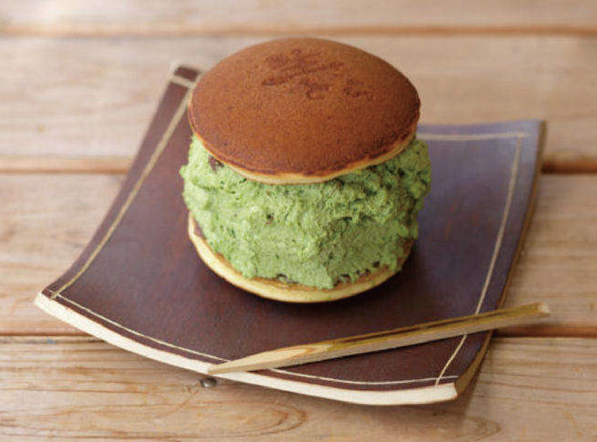
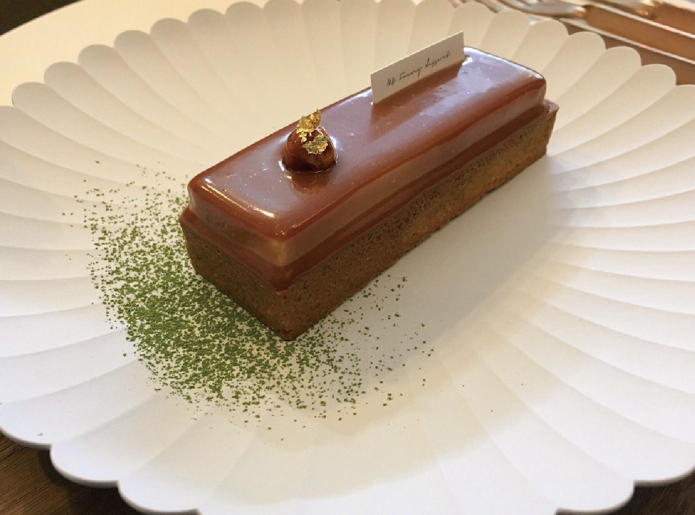
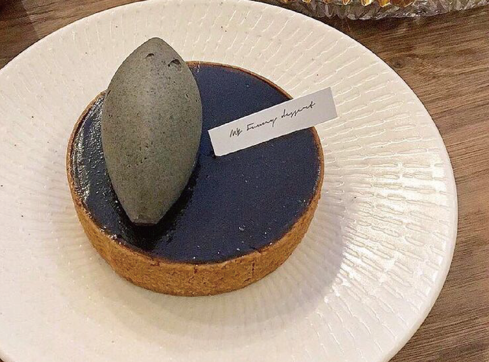
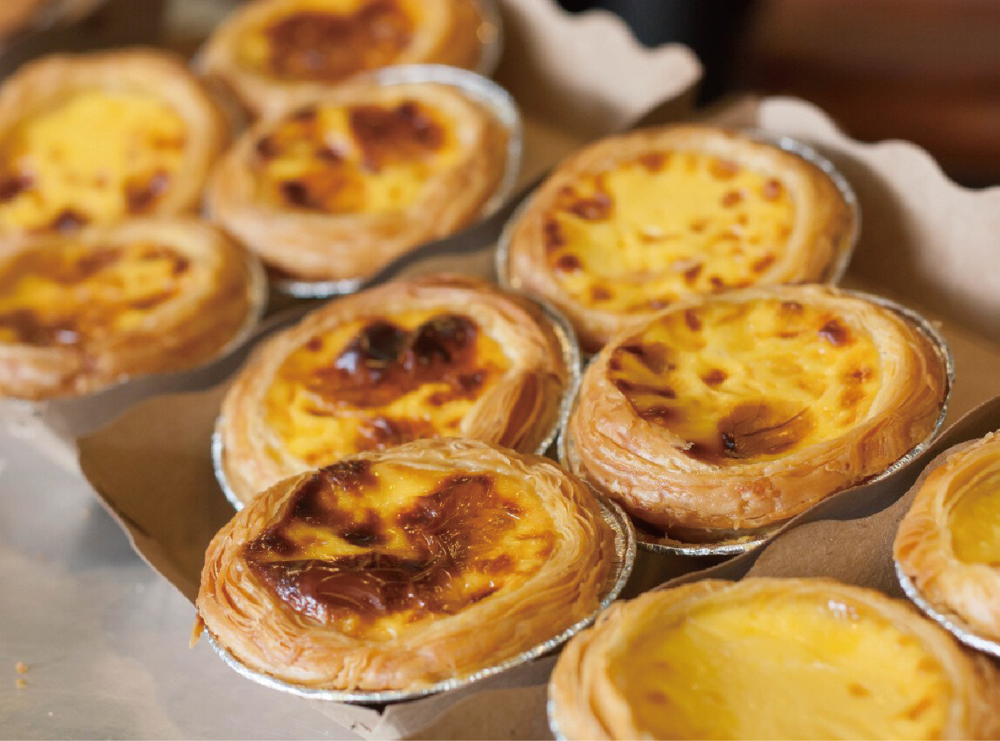
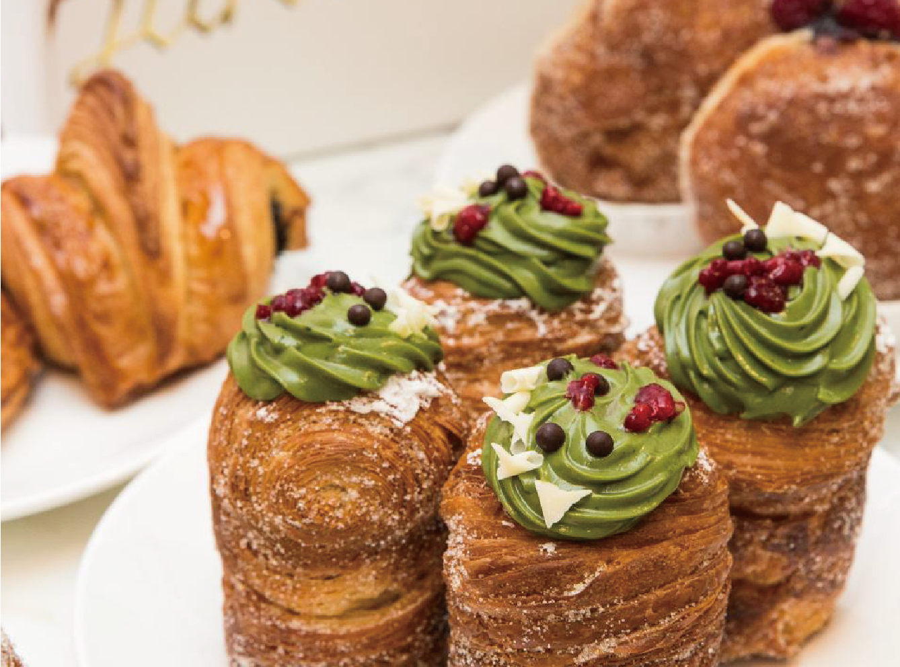
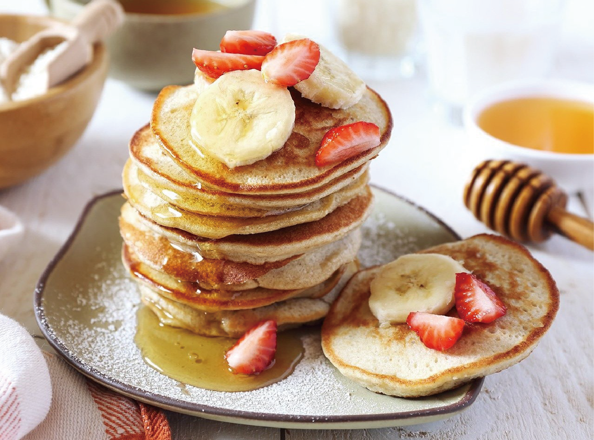
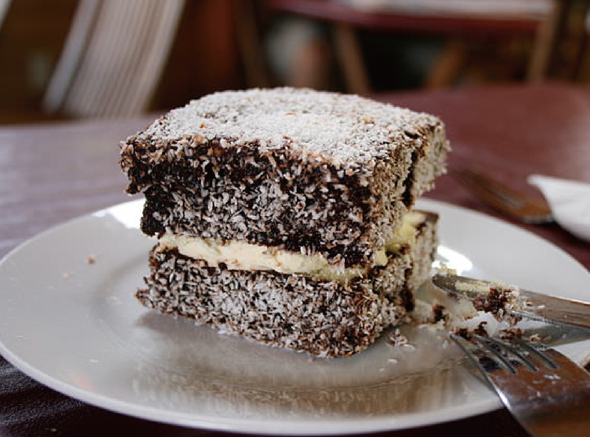